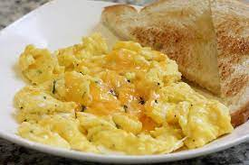

Cheese Eggs

Description
This is a super simple, super delicious recipe for any time of day!
Serve with bacon and toast for a quick and yummy meal.
Ingredients
- 2x Large Eggs
- 1-2oz shredded cheddar cheese
- 1tbsp unsalted butter
- 1tbsp milk
- salt and pepper to taste
Steps
- Heat skillet over medium heat
- Shred the cheese (if not already)
- Beat eggs, salt, and pepper in a small bowl
- Add 3/4 of the cheese to the egg, mix lightly
- Add butter to heated skillet
- When butter stops bubbling add egg mixture to the skillet
- Fold egg over itself every 20 seconds, for about 2 minutes
- Add remaining cheese to eggs, fold once or twice more
- Remove from heat, and serve.